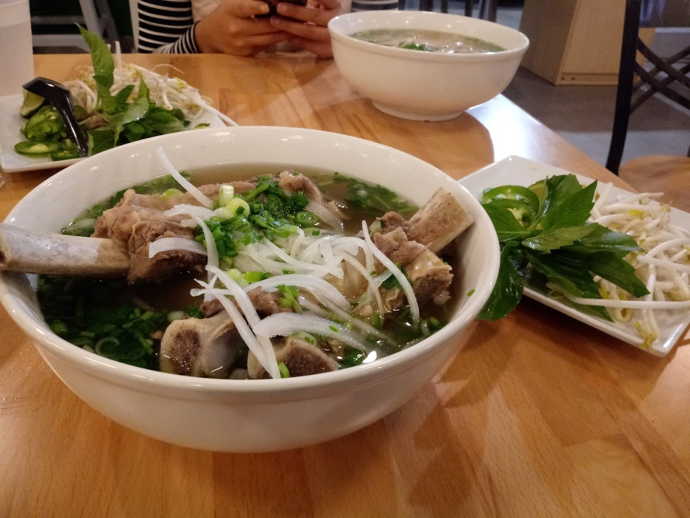

Cilantro Noodle
Welcome to Cilantro!
- Cilantro Noodle is a Vietnamese style restaurant who is very passionate about Vietnamese cuisine. The restaurant prides themselves with fresh ingredients and has many different items on the menu. Pho is their main attraction on the menu however with many choices available including the popular spring rolls. Cilantro is located in the uptown area and has many other attractions nearby. Also Cilantro is located next to Ocha time that serves bubble tea, which is great after your meal. The interior is very modern, however it implants many desings to make it really display the culture. If you're in Charlotte, Cilantro Noodle is definitely a great place to stop by.